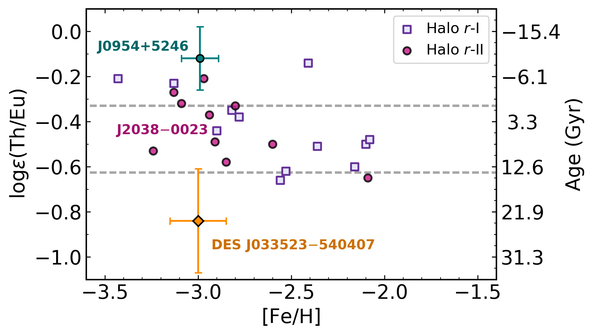

Actinide-Rich or Actinide-Poor,r -Process Progenitor
Good afternoon everyone, and thanks for being here. I am very excited to present work my collaborators and I recently published about actinides in the r-process.
The r -Process Pattern
Hotokezaka+ (2018)
We've heard about the r-process a lot in this session. This is the Solar isotopic abundance pattern with some important features highlighted.
We have the three peaks that correspond to the closed neutron shells and the rare-earth that Nicole talked about.
My favorite part of this plot is relevant to my work is....[NEXT]
The r -Process Pattern
Hotokezaka+ (2018)
The observable actinides. This is Th and U, and they are special since they are only made by the r-process.
Actinides in r -II Stars
Placco, Holmbeck+ (2017), Holmbeck+ (2018)
I say "observable" because Th and U are stable enough that their absorption features sometimes appear in stellar spectra.
In some stars, we observe the entire range of r-process elements.
Here is an example of a Th measurement and a U measurement in two different r-II stars.
Thorium in Metal-Poor Stars
Th/Eu r -process enhanced stars

Holmbeck+ (2018)
I say "observable" because Th and U are stable enough that their absorption features sometimes appear in stellar spectra.
In some stars, we observe the entire range of r-process elements.
Here is an example of a Th measurement and a U measurement in two different r-II stars.
Actinide Variation
hint to key r -process characteristics
Holmbeck+ (2019b)
For stars that show the entire r-process pattern, there is a variation from star to star in the actinide-to-lanthanide ratio.
For example, in Reticiulum II, the "r-process dwarf galaxy," the one star where a thorium abundance could be measured shows a low actinide-to-lanthanide abundance.
On the other hand, some are enhanced in thorium, these actinide-boost stars.
Most r-proces enhanced stars have a relative thorium abundance that approximately agrees with the Solar value.
We call these "normal" because if you use cosmochronometry to estimate an age for these stars using radioactive Th, you get an age that's around what you'd expect, about 11 Gyr.
The actinide-poor and actinide-rich stars will either give you an age that's older than the Universe, or a negative age.
Since the actinides are only made by the r-proces, these differences in the relative actinide abundances clue us into certain r-process conditions, or point to different r-proces sites entirely, that are responsible for producing the actinides.
Actinide Production and Ye
The electron fraction, Ye, r -process event
Ye = [1+(n/p)]-1
In an astrophysical r-process event, the initial electron fraction---or Ye---is one parameter that sensitively affects the final r-process abundances that are produced.
Just as a reminder, a lower Ye means more neutron-rich, and higher Ye is more proton-rich
and essentially sets the initial amount of neutrons that are available to participate in neutron-capture.
[MOVIE] For example, with all else being equal, in certain situations, starting at a somewhat low Ye may produce just the second r-process peak---elements like Barium and Tellurium.
Decreasing the initial Ye produces the lanthanides, but not necessarily the third peak.
Further decreasing the initial Ye can eventually produce actinides in the final abundance pattern.
Then, as the initial material gets more and more neutron-rich, the actinides oscillate. We see this explicitly in [NEXT]
Actinide Production and Ye
narrow Ye range
Holmbeck+ (2019a)
...this plot, which shows the final actinide and Eu abundance as a function of decreasing Ye.
We explored if this variation could explain the actinide variations we observe in stars.
In order to reproduce the observations, the ejecta is only allowed to be within an very narrow window of Ye.
As Xilu mentioned in the previous talk, it is much more likely to have a distribution of ejecta.
So instead of picking one Ye, we chose a combination.
Actinide Production and Ye
narrow Ye range
Holmbeck+ (2019a)
...this plot, which shows the final actinide and Eu abundance as a function of decreasing Ye.
We explored if this variation could explain the actinide variations we observe in stars.
In order to reproduce the observations, the ejecta is only allowed to be within an very narrow window of Ye.
As Xilu mentioned in the previous talk, it is much more likely to have a distribution of ejecta.
So instead of picking one Ye, we chose a combination.
Actinide Boost Stars
combination e
Instead of picking one very low Ye, we chose a combination that was motivated by literature and observations of the GW170817 kilonova.
It turns out that this combination of Ye---in red here---does much better matching to actinide-boost abundances than any single Ye---in blue.
Can we make a more general argument? [NEXT]
Going backwards
Can we instead go backwards and describe a Ye combination from the stellar abundances themselves...
And therefore build a distribution that characterizes the r-process event needed in order to reproduce those abundances.
Actinide-Dilution with Matching Model
empirical e (0.005-0.450)
To explain entire pattern using Zr Dy Th only
So we built a model to do this that uses a Monte Carlo method.
First, we ran about one hundred r-process nucleosynthesis simulations using PRISM
starting at different Ye's, each of which produces a distinct final abundance pattern.
Then, we give the model constraints using three elements.
[PLAY]
The model randomly picks a number of initial Ye's, then adds together the final abundance patterns.
If the summed abundance pattern agrees with the input abundances, then we keep that randomly-chosen set of Ye's and add them to this distribution on the left.
This is the orange line in this movie. We run this hundred of thousands of times until this distribution converges.
In the end, this distribution shows how the ejecta of an r-process event could have been distributed in Ye
in order to produce the input stellar abundances on the right.
ADM
The low-Ye component
No discrete difference
Holmbeck+ (2019b)
We can quantify the contribution from the very-low Ye component.
This plot is a little complicated. Basically, we ran a series of these simulations where we varied the required actinide contribution systematically,
and this axis shows what percentage of the total ejected mass is allowed to be in that low-Ye tail.
The gray dots show what the low-Ye contribution would be for individual stars after running this model.
Notice a few things. First, the low-Ye contribution that we get from the ADM results varies smoothly from actinide-poor to actinide-boost.
Secondly, the actinide-boost stars are just at the tail of an otherwise normal/Gaussian distribution.
To explain the majority of the range of actinide abundances, the low-Ye ejecta need only be between 10 and 30% of the total ejected mass,
which isn't too significance of a difference.
So what does this imply?
Nuclear and Astrophysical Variations
Holmbeck+ (2019b)
Actinide-boost stars do not necessarily callr -process progenitor
This could mean that stars showing the extra enhancement of actinides could be made by the same r-process site as the actinide-deficient case.
For example, this is accommodated in a NSM model by different amounts of dynamical ejecta where very robust actinide production may occur.
[NEXT] Well, we have observations of one NSM published event, so we can compare our distribution to observations to test if they agree with a NSM.
Special Thanks
GW170817 lightcurve
blue ejecta + Lanthanide-rich red ejecta
Cowperthwaite+ (2017)
In addition to gravitational waves, GW170817 released electromagnetic radiation.
To explain the lightcurve from this event, many studies have argued that there must have been at least two components of the NSM ejecta:
a lanthanide-poor blue component, and a lanthanide-rich red component.
So we can do the same thing with our distribution to test if it matches with this observation.
Two ejecta components
Stellar Abundances
X lan = 10-3.8 X lan = 10-0.8 m red / m blue = 1.7
GW170817
X lan = 10-4 X lan = 10-1.5 m red / m blue = 1.6
Inspired by this red and blue component model, we split our mass distributions into red and blue components,
and calculated the lanthanide mass fractions and the mass ratio between them.
And we get some numbers.
Now compare that to the same numbers from an independent study of GW170817.
We see rough consistency, which is interesting considering we built these distribution from spectroscopic observations of r-process enhanced stars,
and the numbers from the kilonova are from an entirely different kind of observation.
This is what we come up with just from stellar abundances---three elemental abundances in particular.
It's still possible that our results from the r-process enhanced stars could be from a different r-process site,
but these results are surprisingly similar considering our vastly different approaches.
Results derived from r -enhanced stars are
r -enhanced stars
What we derived from observations of stars is similar to results derived from a NSM observation.
This could suggest that the r-process enhanced stars like Ret II were indeed enriched by a NSM event.
It does not need to be a NSM merger. For example, a collapsar could yield similar results.